Service Archive Generator Wizard Guide for Eclipse Plug-in
This document will guide you through the installation and usage of the archive generator Eclipse plug-in.
Introduction
As part of the Axis2 tool set, the service archive generator is an important tool that allows the generation of service archives ("aar" file or a "jar" files) that can be deployed as a web services to the Axis2.
Installation
Installation instructions for the plugin can be found here.
Operation
If the plug-in is properly installed you should see a new wizard under the "New" section. (Use the File -> New -> Other or Ctrl + N )
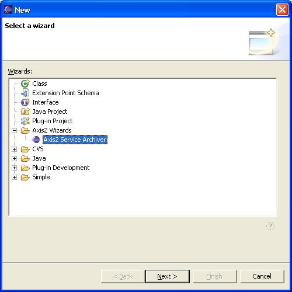
Selecting the wizard and pressing the "Next" button will start the service generator wizard. Following is the first page of the wizard.
Page 1:
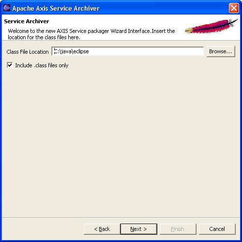
Once the class file folder(which should be a folder in the file system) is browsed and selected, the "Next" button will be enabled and you can move to the next page. Note that you have the option of either including all the files or the class files only of the folder on page 1.
Page 2:
Page 2 of the wizard as seen below requires you to locate/browse the WSDL file. If you do not wish to add a WSDL file to the service archive, select skip WSDL, else you can select the location of the WSDL file by selecting the select WSDL option.
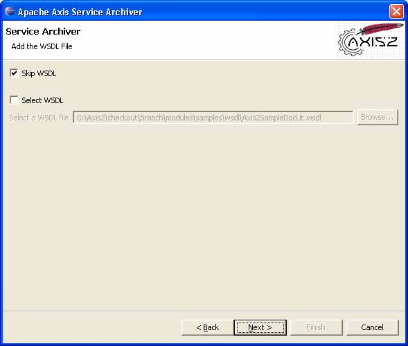
Page 3:
Select the services.xml file on this wizard page by browsing or select the option of generating service xml automatically, after which you can click "Next" button to go to the next page. Notice how the browsing option disables when the "Generate service xml automatically" check box is ticked.
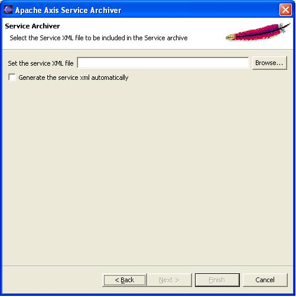
Page 4:
The next step is to add the libraries. The library addition page looks like this :
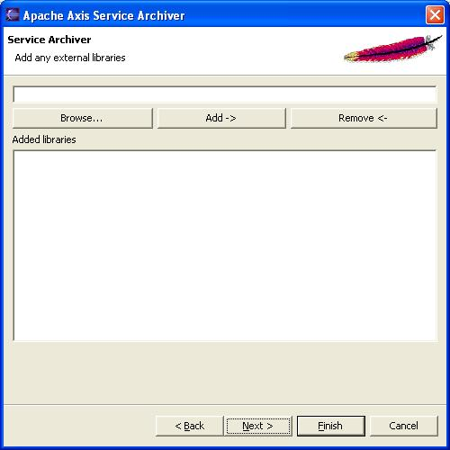
The library name (with full path) can be either typed on the text box or browsed for using the "Browse" button.
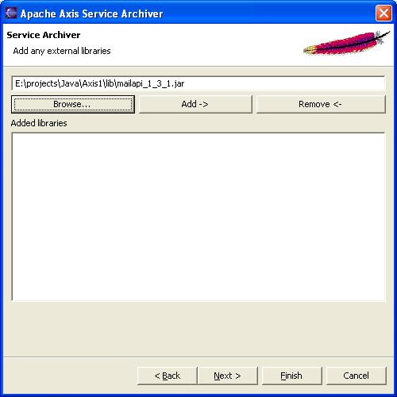
Once there is a library name with full path on the text box, hit the "Add" button to add the library to the list. Added libraries should be displayed in the "Added libraries" list box. This way you can add as many external libraries as you wish. See the screen shots below.
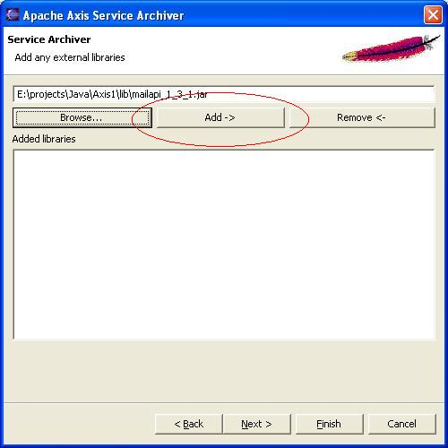
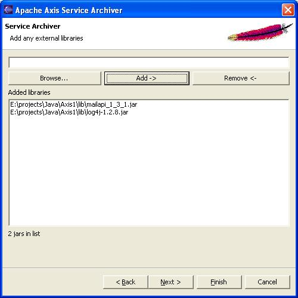
If any added library needs to be removed, highlight it or in other words, select it from the "Added libraries" list and hit on the "Remove" button as shown below. Click on the "Next" button to proceed to the last page of the wizard if the user did not select to auto generate the services.xml file. If user select to auto generate the services.xml file then the services.xml option page will be displayed.
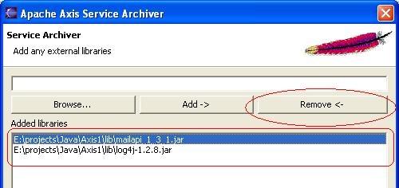
Page 5:
This page only appears if the user select to generate the services.xml at page 3 of the wizard. If the user have selected a services.xml then the user will be directed to the last page of the wizard.
After entering the correct service name and valid fully qualified class name, try to load the existing methods of that class by clicking the load button.
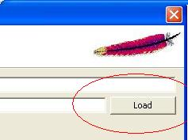
If successfully loaded the user will be presented with a table at the bottom of the page with the details of the loaded class. By checking and unchecking the user can select the necessary methods to include in the services.xml
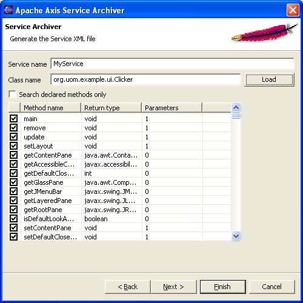
By clicking on the search declared method only check box, the user can remove the inherited methods from the class. Click on the "Next" button to proceed to the last page of the wizard
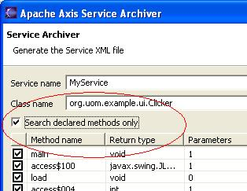
Page 6:
The last page of the wizard asks for the output file location and the output archive file name. To be able to finish the wizard, user must enter valid output file location and output file name.
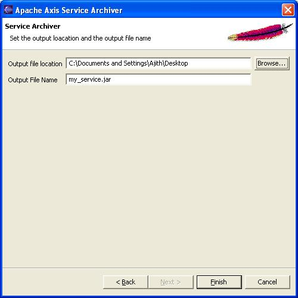
Once all the parameters are filled, hit the "Finish" button to complete the wizard and generate the service archive.
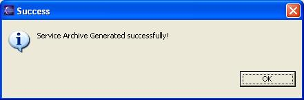
If you see the above message, then you've successfully generated the service archive! This service archive can be hot deployed (deployed at run time) to the axis2
Appendix
- Eclipse reference - http://www.eclipse.org/
- Custom Ant Tasks - http://ant.apache.org/manual/develop.html